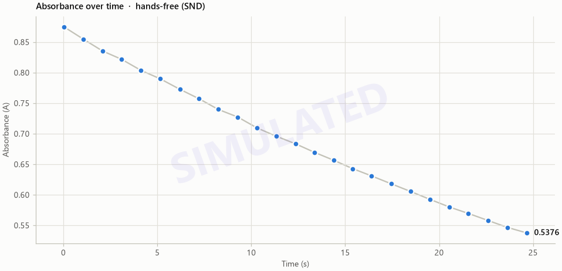
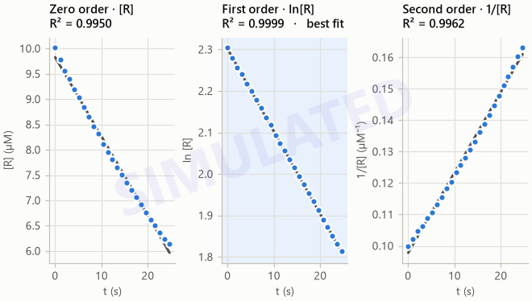
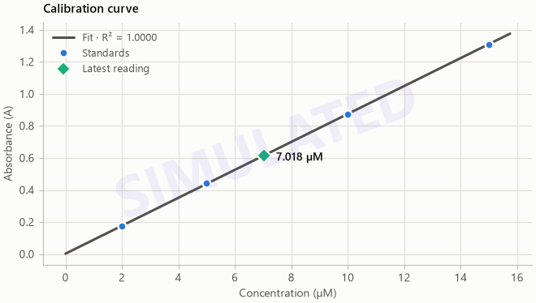
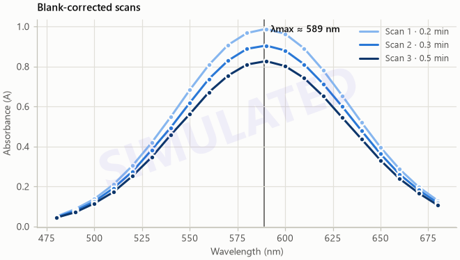

Live readings, automatic wavelength scans, kinetics and calibration curves for the Thermo Scientific
GENESYS 20 spectrophotometer, on a Windows PC over its RS-232 port. Version 0.5.
What it does
Hands-free absorbance readings every few seconds, plotted live
Concentrations from ε (Beer–Lambert) or your own calibration curve
Kinetics: zero, first and second-order fits with k, R² and half-life
Automatic wavelength scans with blank correction, repeated on a timer
Saved runs with a one-page report to email or print
Updates itself when a new version is published
What you need
Windows 10 or 11 with Python 3.10 or newer (python.org, tick Add python.exe to PATH)
A USB-to-RS-232 adapter, plus the right cable or adapter for the GENESYS (section 2)
Internet once, to install the Python packages
The GENESYS 20 itself (or none: the demo simulates one)
1. Install (about 5 minutes)
Unzip the package anywhere you can write to, e.g. Documents\GENESYS 20 Live.
Double-click Make desktop shortcut.bat, then start the app from the new desktop icon.
To try it without the instrument, run GENESYS 20 Live (demo).bat. Everything in the demo is
labelled SIMULATED.
2. Connect the GENESYS 20
The cable: the one thing that trips everyone up
The GENESYS 20's RS232 port (the 9-pin male socket labelled RS232 on the back, not the 25-pin PRINTER
port) is wired as DCE: it transmits on pin 2. Whatever sits between it and the PC must cross over to a
normal PC-style connection:
Your USB-serial adapter
What goes between adapter and GENESYS
Standard adapter with a male 9-pin end
A straight-through female-to-female cable or
gender changer (Thermo part 336042)
Adapter with a female 9-pin end (e.g. DTECH)
Usually a male-to-female null-modem
adapter. This lab's DTECH adapter needs one; pin 9 doesn't matter.
Total silence (no bytes either way) almost always means the wrong cable crossing. The
tools folder has a loopback test that tells a dead adapter from a crossed cable (section 9).
Settings on the GENESYS
Menu
Set to
Utility → RS232
Baud 9600 · Data bits 8 · Parity Off · Handshake Off · Terminator CR/LF
Utility → Printer setup
Serial; Print WL = Yes; Print Units = Yes (only needed for the Print key)
In the app
The Connection card finds the USB-serial adapter by itself (Bluetooth ports are hidden). The COM
number changes if you use a different USB socket.
Click Connect. The header pill turns yellow: Connected · waiting for a reading.
Click Identify (Hands-free card). The Raw data tab should show GENESYS 20 and its
revision. If it doesn't, see Troubleshooting.
Serial settings (Connection card → Edit) must match Utility → RS232. They lock while connected.
3. Taking readings
Hands-free: tick Ask for a reading every N s. The app sends SND and gets the
absorbance to 4 decimals. Nothing on the instrument changes.
Print key: with Printer setup = Serial, every press of Print lands in the app with its wavelength
(e.g. 530nm 1.351 A).
Reading now shows the latest value, %T and concentration. The Live tab plots A, %T or
concentration against time.
New run (t = 0 now) at the moment you mix. Mark event… labels additions on the graph.
Once per setup, compare one reading with the GENESYS display and click Yes, it matches (Raw data tab).
The pill turns green.
The GENESYS 20 can't report its wavelength over the cable. Keep the wavelength box in the Sample
card equal to the instrument.
Out-of-range readings. The GENESYS 20 reads −0.1 to 2.5 A. Outside that, it answers the
number followed by ER (the same condition that makes its display flash). Hands-free readings show such
values but don't record them; scans keep them and mark them as hollow points. Dilute samples above 2.5 A.

Live tab: hands-free readings of a
fading dye (demo).
4. Sample settings and presets
The Sample card holds what you know about the solution: wavelength, path length b, molar absorptivity ε,
molar mass (for mg/L) and the unit to display. Concentrations follow c = A / (ε·b), or come from
your calibration curve.
Presets fill these in. Reference presets show their source under the list: NADH (340 nm),
p-nitrophenolate (405 nm), ferroin (508 nm), crystal violet (590 nm; published values disagree, so calibrate),
and six FD&C food dyes using the official JECFA/FDA absorptivities.
Method presets (Bradford 595 nm, BCA 562 nm, permanganate 525 nm) only set the wavelength and switch
to "My calibration curve": those methods need standards.
Save… stores your own presets (★) in the data folder.
5. Kinetics
Say whether the reactant absorbs (colour fades) or the product does (colour grows). Give the final
absorbance A∞ if it isn't zero, or ε and c₀ when the product absorbs. The Kinetics tab plots [R], ln[R] and 1/[R]
against time, fits all three, and highlights the best straight line. Use the time window to fit part of a run.
R² from different transforms is a guide; also look for curvature.

First-order fade picked as the best fit,
k = 0.020 s⁻¹ (demo).
6. Calibration curves
Zero the GENESYS with the blank (0 ABS/100%T).
For each standard: put it in, take a reading, type its concentration, click Add the current reading as
this standard.
The fit shows slope, intercept, R², LOD (3.3·s/slope), LOQ (10·s/slope) and ε = slope/b.
Choose My calibration curve in the Sample card to turn readings into concentrations.
Saved curves: save a curve with a name and load it another day (same wavelength).

Four standards and
an unknown read off the line (demo).
7. Wavelength scans (Scan tab)
Set From / To / Step, how many Scans and how often (Every, minutes). Example: 400–700 nm,
10 nm steps, 3 scans every 5 min to watch a spectrum change.
Automatic (default): the GENESYS moves itself with GTO <nm>, the command Thermo's
VISIONlite software uses for the GENESYS 20. It waits Settle seconds (1.5 s works) and reads.
Afterwards it returns to the wavelength in the Sample card.
Blank pass first (recommended): the instrument is single-beam, so the blank is read at every
wavelength first and subtracted from each scan. The app pauses so you can put the sample in, then click
Continue.
Guided (fallback): the app shows the next wavelength; set it with the nm keys and press Print. The
printed wavelength is checked.
Tested on this lab's GENESYS 20: 480–600 nm in 20 nm steps with a blank pass takes about 40 s.
Reading the same blank twice gives a corrected spectrum within ±0.0007 A of zero. Away from the zeroing wavelength
the blank alone can read below −0.1 A; those points are flagged but kept, because the subtraction needs them.

Three blank-corrected scans of a fading dye,
λmax ≈ 589 nm (demo).
8. Saving and sharing runs
Save run… (Run card or Runs tab) writes a folder with report.html (one page with every chart),
readings.csv, scan.csv, chart images and run.json.
Runs tab: Open report, Share (zip), Copy summary (paste into an email),
Load into app to reopen, Delete (moves it to runs\_deleted).
Data folder → Change…: point it at a OneDrive or shared folder, and everyone sees the same runs,
presets and calibration curves.
Every byte from the instrument is also logged in logs\raw-*.jsonl, and every reading in
logs\readings-*.csv, as it arrives.
9. Troubleshooting
Symptom
Fix
"Could not open COMx … Access is denied"
Another program (or a second copy of the app) has the
port. Close it, or click Disconnect there.
Connected, but nothing arrives and Identify gets no answer
Usually the cable crossing (section 2).
Check Utility → RS232 matches. Run py tools\loopback_check.py COMx 9600 300 and bridge pins 2–3 of the
adapter: echoes mean the adapter works.
Adapter shows "Code 10" in Device Manager
Unplug it, wait 5 s, plug it into another USB socket.
Then pick the new COM number.
Raw data shows ER after a reading
The reading is outside −0.1 to 2.5 A. Dilute, or check
the blank and wavelength.
Concentration column empty
Enter ε (or choose the calibration curve) in the Sample card.
Hands-free readings switched themselves off
The GENESYS didn't answer SND three times:
check the connection, or use the Print key.
10. What the app sends to the instrument
The app refuses to send anything except these, so it can't change settings, calibration or alignment:
Command
Meaning
Sent when
MODEL, REV
Model and firmware revision
Identify
SND
Send the current absorbance
Hands-free readings, scans, Ask once
GTO <325–1100>
Go to a whole-nm wavelength
Automatic scans only
Each command is echoed by the instrument, then answered, then closed with OK (or
ER). The GENESYS 20 echoes characters as they arrive, so the app sends one command at a time. Other
commands found in Thermo's driver (ZER, TRN, CCM, ECH) are deliberately not used. GENESYS 2/5 commands
(WAVELENGTH, DATA, SCAN) are refused by the GENESYS 20 with ER.
11. Updates
When a newer version is published, a blue bar offers Update now. Only changed files are downloaded, each
one is checked, and the old files are kept in .update_backup. Your settings, logs and data folder are
never touched. Click the version number in the header to check by hand.